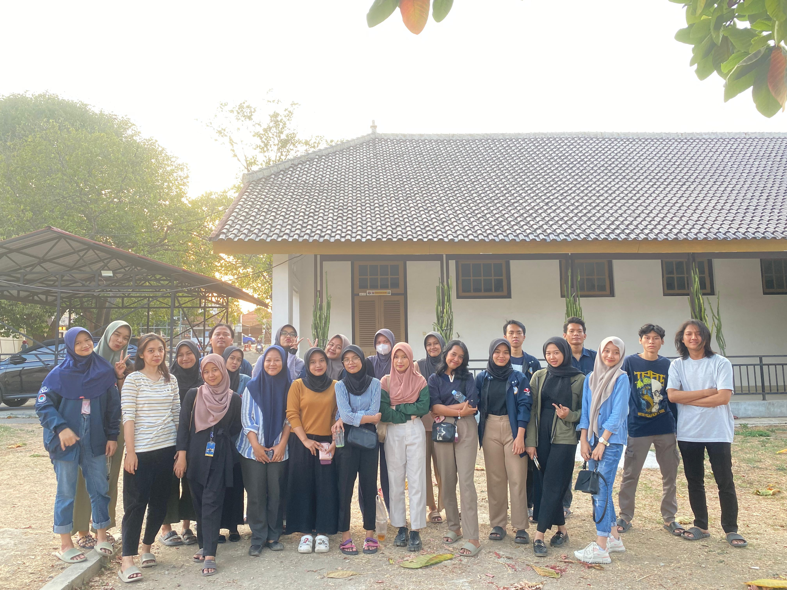

Contact Me
Apabila ada hal yang ingin ditanyakan, silahkan chat saya pada form berikut ini:
Saya lahir pada 6 Desember 2004 di Jakarta, tetapi memiliki KTP yang berdomisili Bogor. Saat ini saya menetap di Purwakarta untuk melanjutkan studi saya, tetapi sebelum di Purwakarta saya sempat menetap di Bandung selama beberapa tahun. Berikut ini adalah beberapa hal yang saya gemari:
Saya sangat suka jalan-jalan baik dalam konteks travelling keliling Indonesia atau sekedar jalan-jalan sore untuk menghilangkan penat.
Salah satu hal yang dapat memperbaiki mood saya adalah dengan berwisata kuliner terutama di tempat yang masih asing bagi saya.
Iya tidur, udah gitu aja ngga ada penjelasan lebih lanjutnya.
Kesibukan saya saat ini adalah berkuliah dan mengikuti beberapa kegiatan organisasi, saya merupakan staff departemen Pengabdian Pada Masyarakat HIMA PSTI. Diluar program kerja HIMA, kadang saya ikut turut serta dalam program kerja BEM.
Apabila ada hal yang ingin ditanyakan, silahkan chat saya pada form berikut ini: